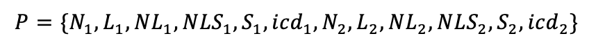
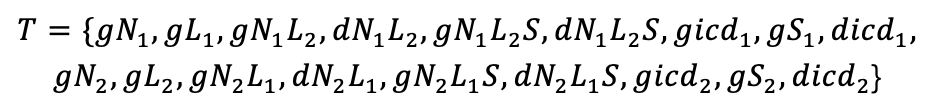
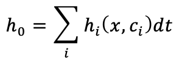

Our modeling focuses on two main aspects. The first is optimizing the transcriptional modules to increase signal-to-noise ratio, and the second is forecasting clinical outputs for multiple types of mixtures of immune cells and cancer cells. We experimentally showed that an amplification step is required. We also used a stochastic process to model receptor-ligand interaction kinetics, a possibility theory to model the transcriptional amplifier, and differential equations to model signal integration. ENABLE constructs with modeled parameters have increased signal-to-noise ratio and should have larger dynamic range.
The essence of the Amplifier for transmembrane signaling
By modeling, we demonstrated that our 3-layer design balances adjustability and stability for transmembrane logic processing.
Cellular logic gate lies at the foundation of our system, but the core and essential design of ENABLE is the detection of transmembrane signals. With our powerful SynNotch receptors transferring extracellular signals into intracellular transcription factors, we aim to detect real-world signals through ligand-receptor binding. In previous designs that detect intracellular signals with logic gates, researchers merely control the input to the system by not adding or adding superfluous small molecule drugs (Auslnder et al., 2012), or by not performing transfection or performing superfluous transfection, which is analogous to the 0 or 1 binary input. In such scenarios, just one single element is suffice to faithfully represent the on and off of the input. However, these previous designs are unable to transduce transmembrane signals in realistic circumstances. Our analysis through modelling leads to the 3-layer design principle of the ENABLE toolbox, which is to introduce an amplifier layer between the SynNotch (input, which we call the Receptor) system and the responsive element (output, which we call the Combiner).
Previous designs fail to transduce transmembrane signals
Signal detection in engineered cells is composed of three parts: input, the representation of information through transcription factors (TFs); process, the processing of information through TF-Promoter interactions; and output, the response to the information through gene expressions. When the input is experimentally controllable or even artificially manipulated, researchers can explore the capacity of cellular information processing by designing specific circuits with only one element (Figure 1). Using transduction or small molecule drugs for input manipulation, scientists in previous studies (Gaber et al., 2014) have shown the logical processing ability of engineered cells and synthetic gene circuits.

Figure 1. Previous designs usually incorporate one pair of transcription factor and promoter as the detection system. The amount of transcription factor is manually controlled using small molecule drug, transduction, etc. As a result, the input of the system is nearly arbitrary, which can easily leads to the on/off output, represented by the activity of the promoter.
Unlike previous designs, the ENABLE system aims to detect real-world transmembrane signals represented by SynNotch receptors. The imperfect and variable situations and scenarios in the real world are far from experimentally controllable; yet they are unavoidable and must be dealt with.
1. The number of Notch molecules on the cell membrane is relatively limited. Thus, the amount of released transcription factors is constrained (under detection level and have never been directly visualized) even under superfluous activation. This will prevent the input from being arbitrarily amplified.
2. Experimental observations show that SynNotch comes with a certain level of background activation without external stimuli, which may most likely be a result of thermodynamic randomness.
These factors prevent the previous designs from faithfully detecting the on and off of external stimuli. In fact, any synthetic circuits with only one input-process-output element will be limited in its detection ability. Here, we conventionally used the Hill Equation to characterize such an element, in which the output (denoted by X) relates to the input (activator for example, denoted by A) through the equation:

Both X and A are described by their concentrations. Kd denotes the dissociation constant between the activator A and its binding site on the gene circuit whereas the n denotes the Hill coefficient. Please refer to the model from our team in 2017 for details.
The two free parameters, the dissociation constant (Kd) and n (Hill Coefficient), can be controlled to adjust the element. As shown in the following interactive figure, this allows us to manipulate the element to achieve different input (A) - output (X) relationships.

Figure 2. Previous designs with single element are not able to handle transmembrane signal processing task. The input-output relationship of a single element is characterized by Hill Equation, which comes with a 'detection range' defined by Kd and n. When the input range does not match the detection range, the system cannot faithfully represent the on and off of the input.
However, the free parameters are in reality not 'free' at all. While Kd is determined by the stability of the transcription factor-binding complex. The available transcription factor-promoter pairs, unfortunately, are limited, thus this constrains the dynamics that the one single input element can achieve to very few possibilities. More specifically, membrane receptors such as SynNotch that detect transmembrane signals and interact with ligands via non-covalent interactions require extremely low dissociation constants that may not even be realistic. On the other hand, the sensibility of the system needs to be high while the possible input range remains low and narrow. Furthermore, the Hill coefficient n representing the sensibility is almost uncontrollable and requires the specific and accurate designing of the promoter. Thus the previous designs that utilize a single element are not able to handle transmembrane signal processing tasks (Figure 2).
One potential solution is to change the number of binding sites of the transcription factors. As illustrated in Figure 3, different binding situations can lead to different activation levels. While a single binding site can be characterized by the Hill Equation.

Figure 3. Changing the number of binding sites of the transcription factors can potentially lead to more complex dynamics. Different numbers of bound transcription factors have different effects on the activity of the promoter, denoted by α in the figure.
We characterized the input-output relationship when there are multiple binding sites (of an activator A for example).

While n and Kd are the Hill coefficient and dissociation constants, N represents the total number of binding sites, αi denotes the activation level while i activators are bound to the binding sites (bigger i leads to bigger α). Unfortunately, the following interactive figure demonstrates that such dynamics is still Hill-like, and still relies on different pairs of transcription factor-binding sites to manipulate the dynamical range (four binding sites are used as an example).
In conclusion, changing both the transcription factor - promoter pairs and the number of binding sites can be used to adjust how a synthetic gene circuit responds to the input. However, both are limited and cannot enable a single limited-number element to faithfully detect transmembrane signals. Nevertheless, they are still valuable in our ENABLE after the addition of an amplifier layer (Figure 4).

Figure 4. In the design of our system, the input will first come from the SynNotch receptors. Then it will be amplified by a tunable amplifier circuit, which will then feed input to the final responsive element, our Combiner.
An amplifier circuit
The realistic constraints and our analysis through modeling prompted us to introduce the amplifier circuit. With the amplifier circuit present, the eventual input into the final responsive element now comes from the output of the amplifier circuit instead of the output of the SynNotch receptors. This enables our system to be much more adjustable and stable.
With the amplifier circuit, the input from SynNotch will no longer directly enter the responsive element but will first go through the Amplifier. As demonstrated before, the input signal from SynNotch is weak and has a narrow range, making it unsuitable to be directly processed by the responsive element. However, with the amplifier, input strength to the responsive element can be manipulated by the amplifier, providing a higher level of control.

Figure 5. The amplifier circuit introduces nested dynamics into our system. The output of the amplifier A and its input from SynNotch B are characterized by the Hill Equation. The A subsequently leads to the final output X, which again follows the Hill Equation in relation to A. While the input range of B is usually narrow and hard to detect, it can be amplified to the range of A through the amplifier circuit.
To remain consistent, we denoted the final output of the responsive element as X and the input as A. With amplifier circuit present, the A now means the output of the amplifier circuit while the B now means the direct input from SynNotch, which is again still the input to the amplifier circuit. As shown in Figure 5, the narrow range of the SynNotch signal does not support faithful detection. But with the amplifier circuit, the input range will be converted to an output range, which will then become the input range to the responsive element.
The output range of the amplifier is currently still undiscriminatable to the responsive element, but the amplification range can be manipulated. First, we can freely engineer the transcription factors to change the dissociation constant Kd. Since the input signal is now amplified, it will be easier to find an appropriate A to X relationship (Figure 6).
Secondly, with a certain and fixed A to X relationship, we can change the binding sites of transcription factor B of the amplifier circuit which determines how the signal from SynNotch will be amplified. This allows us to very freely adjust the dynamical properties of the ENABLE toolbox. The previously unusable input range now gets amplified and enters the detection range of the responsive element; hence, allowing accurate detection (Figure 7).

Figure 6. Adjusting the transcription factor - its promoter pair between the amplifier circuit and the responsive element changes the relationship between X and A.

Figure 7. Adjusting the binding sites of transcription factor B on the amplifier circuit leads to a dramatic change in the amplification magnitude. Thus, the former narrow and undetectable range of B can now be easily manipulated in terms of A.
-
Click to expand
Derivation of the formula we use to characterize a single transcription factor - promoter pair with multiple binding sites is straightforward under a few appropriate assumptions. We will keep using activator for example. Since we have N binding sites, the number of actual bound activators ranges from 0 to N. First, we assume that the activity of the promoter is solely controlled by the number of bound activators, but not their spatial arrangement (or spatial arrangement has little influence on the activation mechanism). Similar evidence has been reported before \[3]. Thus we could simply consider in total the N+1 states representing N+1 bound activators. We use α\_i to denote the activation level while i activators are bound to the binding sites (bigger i leads to bigger α). Second, zinc finger proteins are used as the building block of our transcription factor. Structure analysis shows no known interaction sites between the proteins \[4]. We thus assume the different biding sites are independent to each other. This allows us to easily assign probabilities to the N+1 states. For each binding site, the probability of the activator being bound is again describe by 'Hill Equation' (refer to the model of our team in 2017 for the probabilistic explanation of Hill Equation and more Link here).

To account for the four independent binding sites, elementary combination would show that the probability of i (ranging from 0 to 4) activator being bound is

Thus the final output can be characterized by the expectation of the promoter activity under the N+1 states, which is

Receptor-Ligand kinetics
The Receptor-Ligand collects extracellular signals for further intercellular processing, which constitutes the most significant part for any transmembrane logic gate. To reduce the background activation of SynNotch, we put a huge experimental effect based on its protein structure.
We focused on the signal-noise-ratio (SNR) of the Notch/SynNotch receptor. In previous research, some quantitative descriptions of Notch-Ligand have been published for explanation and exploration of systematic design (Andrawes MB, et al., 2013). For example, cis-inhibition was modeled via chemical kinetics, which precisely predict the mechanism of Notch-induced pattern formation (Sprinzak D, et al., 2010). However, stochastic models for Notch-Ligand simulations have not been reported yet.
Here we present a mathematical model for Notch-Ligand kinetics using Stochastic Petri nets, which takes random intercellular processes into consideration. We found that the SNR of our system is not only dependent on the affinity of Notch-Ligands, but also the Secretase Complex. We also expanded our model from targeting just molecular-level chemical reactions to cell colony-level chemical reactions, which offers clues for oriented optimization of Notch. Last but not least, our object-oriented programming (OOP) makes it easy to transplant into further application.
Using ChemicalReactions toolkit
Not like chemical reactions happening in tubes, Notch-Ligand interaction occurs in a 2D manner. That is to say, chemical reactions between Notch and Ligand takes place on the membrane of two neighboring cells. Two cells may exchange their components on the membrane by touching to each other. Due to physical constraints, the chemical constitution of those cells remains relatively independent. However, when Ligand proteins binding to the extracellular domain of Notch receptor, proteolytic cleavage and release of the intracellular domain are induced.
Proteolytic cleavage of Notch involves a few steps, including S2-cleaveage by metalloprotease ADAM10, S3-cleavage by γ-secretase complex or γ-secretase Tetering (van Tetering G, et al., 2011). Here we simplify the cleavage of Notch after ligand binding, and we suppose that the cleavage is a one-step reaction with the smallest rate constant of all cleavages mentioned above. This simplification is coming down to the rate-limiting step in physics chemistry. The simplified equations are as follows. N+L⇌NL NL+S⇌NLS→icd
Here N refers to Notch, L refers to Ligand, NL Notch-Ligand complex, S protease, NLS Notch-Ligand-protease complex, and icd means the intracellular domain of Notch.
Our mathematic tool is Petri net. For the history and definition of Petri net, please check reference Wilkinson DJ， et al., 2006. This method views each chemical or reaction intermediate as nodes in a network, element reactions as edges, and weight and direction of each edge for stoichiometric number and reaction direction. Especially, we use {P, T, Pre, Post, M} to describe a Petri net precisely: P={p1, …, pu} is the space of chemicals, T={t1, …, tv} is the spaces of all transitions (element reactions) , Pre is a v*u integer matrix containing the weights from chemicals to transitions， and the (i,j)th element of this matrix is the weight of the arc going from chemical j to transition i, and Post is a v*u integer matrix containing the weights from transitions to chemicals, and the (i,j)th element of this matrix is the weight of the arc going from transition i to chemical j. M is a u-dimensional integer vector that represents the current state of the system (i.e. the number of molecules).
For system with only one kind of Notch and one kind of Ligand, we have  the subscripts refer to the index of a cell in a cell-pair, and the index is designated arbitrarily. Also, we have 公式公式嵌入 
Here the lower capital g and d refer to the generation and degradation of following chemicals. Similarly, we can write out the matrix Post and Pre.
We set W as a u-dimensional zero vector for initialization. Then we need to designate when and how this system chooses to finish a certain element reaction. For this purpose, we consider that the occurrence of an element reaction is a heterogeneous Poisson process, and certain reaction selection via sampling. That’s, the possibility that an element reaction Ri happening in the time interval (t,δt] is given by hi(x,i) δt. With additivity assumption, we can get the possibility an arbitrary reaction happening in the time interval (t,δt] is 
The form of hi(x,i) is given by mass-action stochastic kinetics. For a given system, hi(x,i)=ci\*C(ni1,ni2, …, nin), where ci is the rate constant for reaction i, nin refers to the molecule number of reactant k for reaction i, and function C() means combinatorial number of all n\_in. In practice, C() can be replaced by Π() with some modifications for ci. For more details in our simulation, please refer to simulation parameters.
Similarly, we can easily derive the expression for system with i kinds of Notch and j kind of Ligand.
Constitutive expression for stationary system
For certain parameters, Notch signaling component is equivalent to constitutive expression for stationary system (Figure 8A). It’s a good property for using Notch-Ligand in colony design, which uses the simplified version for higher-layer system simulation and shorten the simulation time without side effect of poor prediction.
The rate of Notch cleavage by proteases
Cleavage rate affects system response in a linear way. Notch-Ligand specificity may not affect system response.
For certain parameters, generation of Notch-Ligand-protease complex may be the rate-limiting step (Figure 8A). For example, decreased rate constant of Notch-Ligand-protease complex generation reduce the icd generating rate in a linear manner (Figure 8B with rate constant of gNALS decreased to one tenth of that of Figure 8A). Also, changing Notch-Ligand binding affinity may not significantly change icd generating rate, which strongly corroborated this view (Figure 8C with rate constant of gNALB decreased to one tenth of that of Figure 8A; and in Figure 8D where heter/homo refers to the rate constant ratio of gNALB/gNALA.
The signal-noise-ratio (SNR)
SNR can be tuned via Notch-Ligand binding affinity in a power-law manner.
For certain parameters, signal-noise-ratio can be tuned via Notch-Ligand binding affinity in a power-law manner (Figure 8E with rate constant of gNALBvaried compared to Figure 8A]. This offers clue for SynNotch optimization.
Amplification is required for Notch-Ligand (see above). For certain parameters, signal of a certain pair of Notch-Ligand coupling may be diluted by occurrence of other reactions (Figure 8F with types of overall Notch/Ligand varied compared to Figure 8A).
Figure 8. Simulation results of Notch-Ligand kinetics A-F分成6个，需要补各个的XY轴的涵义 @@@@
The stochastic Notch-Ligand kinetics can be simplified as a single chemical constant for some certain conditions. Though this may greatly reduce the workload of transplant our model into a higher-scale application (e.g. to model a cell colony made up of cells armed with Notch and Ligand), this OOP modeling style makes it easy to transplant Notch-Ligand kinetics at the molecular level to macroscale level. Please continue to our software, where we abstracted mammalian cells into blocks (with parameters modeled and simulated above), to predict cellular behaviors. We quantified the behavior of individual cells within a population. We found that besides ENABLE signaling, cell proliferation speed, cell life-span and cell adhesion greatly impact cancer elimination effectiveness. Our modeling and software gives ENABLE gates a population perspective, and test them in a clinical scenario.